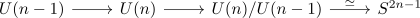

cohomology ring of the unitary group
Proposition
the singular cohomology ring of the General Unitary Group is given by
Proof
induction basis: $n = 1$
Then $U(1) \cong S^1$. by singular cohomology ring of the sphere we are done
induction step
consider the fiber sequence in top

by closed-subgroup theorem as principal g-bundle
by the relative Hurewicz theorem & universal coefficient Theorem for cohomology
is an isomorphism for $k \leq 2n - 3$.
use Leray-Hirsch for the empty fibration
Consider the classes $e_1,...,e_{2n-3}$.
We can lift those to $e_1,...,e_{2n-3}$
It follows that the restriction map
is surjective
Note that exterior algebra as free module
Then by
use Leray-Hirsch for a fibration retraction
Note that
It remains to show thhat $e_i^2 = 0$ in $e_i^2 = 0$.
This holds by square of an odd homogeneous element as 2-torsion element in a graded-commutative ring where $H^*(U(n); \mathbb{Z})$ does not have nontrivial 2-torsion elements.